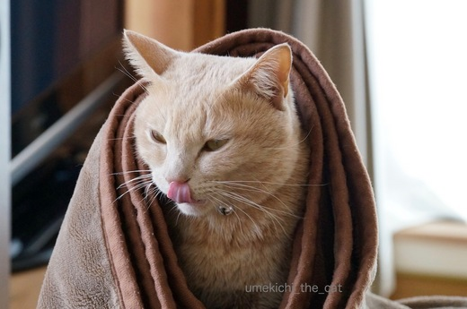

梅吉さんへのプレゼント [梅吉]
バレンタインの日も平常心の梅吉さん。
平常心どころか寝ぼけていませんか？

いつもどおりのあさねのねぼけがおやで。
おかーさんも職場や仕事関係の人に義理チョコを渡すなんて無毛なイベントは賛成しないけど
自分や家族間で楽しむなら良いじゃない？
それに普段は買えないようなお高いチョコレートが大手を振って買えるのよ〜。
なので、行ってきま〜すε=ε=ε=ε=ε=ε=ヾ(*ΦωΦ)ﾉ

デパートの特設会場のチョコレート売り場は子供からおばあちゃんでにぎわう「女子の巣」。
女性が自分用に買うことを想定してかゴージャズなパッケージや
ラブリーなデザインのチョコレートが目立ちましたよ。
で、手に入れたのがこちら。

焼酎ボンボンです！。for おっと。
おもてに貼ってあるシールがチョコレートの中に入っている焼酎の銘柄です。
「アサヒ」なんて九州以外ではあまり見かけない焼酎なのでは？
色々みてたら自分用のも欲しくなってきて・・・・
（最初からそのつもりだったのでは？というご意見はスルーです。笑）

わーい！パッケージ買い！！
グリーンの箱のにゃんこのうつろな目が
お風呂でふぬけになっている梅吉そっくりで買わずにはいられませんでした。
箱が空いたら梅吉のヒゲを入れるんだ〜。
このほかにも猫パッケージたくさんありました。
猫人気、チョコレートの世界にまで進出ですね。
梅吉さんには食べ物ではなく愛を込めてじゃらしを思い切り振り回してさしあげました。

がぶ〜っ。
獲物を捕まえたおとこの顔です。笑

走り疲れて、休憩したいをアピール中。
皆さんへのお返事＆ご訪問ちょっと遅れています。ごめんなさい(꒦ິ⌑꒦ີ)

カフェオレ色の梅吉

梅吉 2023年8月10日 永眠


梅吉と出会った譲渡会

犬猫の理由なき殺処分ゼロ
妄想広告
UMEKICHI 光

爆発的に早い！
時々攻撃的！
Thanks to Mr.Boss365
爆発的に早い！
時々攻撃的！
Thanks to Mr.Boss365

うちの娘も旦那に、焼酎ボンボン買ってました！
「赤兎馬」とかのやつです…1個もらいましたが、中にガチな感じで焼酎っぽいのが入ってて美味しかったです〜♬
by BillK-ko (2017-02-15 18:12)
小さい頃は、ウィスキーボンボン好きだったな〜〜
大人になった気分でぱくぱく食べてた！(笑)
猫ちゃんのチョコの箱、これめちゃめちゃ可愛いね。
わたしも中身は相方君にあげて、箱だけ欲しかったなーー
梅吉君はたくさん遊んで貰ったんだね。
あおうみはオヤツ貰ったよーー^^
by リュカ (2017-02-15 18:38)
猫シリーズ可愛いね
車のない私は近所のスーパーしか行けない←行く気ない(笑)
だからオシャレなチョコとは無縁だわ
車が納車されたら美味しいもの買いまくる！それまでガマンするでやんす
by みいこ (2017-02-15 18:38)
飲める人はこういう１粒で２度美味しいチョコ嬉しいですよねぇ♪( ´▽｀)
うちはかみさんもかみさんの妹もその時の気分で買ってるみたいですが、
今年は見つけた猫型チョコがかな〜りお値段高かったので諦めたと言われましたw
うちはちゅーるを多めにあげてました( ^ω^ )
by ニッキー (2017-02-15 20:07)
わ～ニャンコのパッケージ、いいですね(*^▽^*)
梅吉さんおひげストッカーにぴったり♪
こてつのひげは無粋なタッパーに入れてるので何か入れ物を考えないと^^;
ニャンコにチョコはＮＧだから、こてつにはオモチャを買いました^^
by ゆきち (2017-02-15 20:23)
いろいろな種類のチョコがありますよね♪
見ているだけで楽しくなっちゃいます！
入れ物も可愛いのがたくさん！
自分用に見ちゃいますね(#^.^#)
by きぃ (2017-02-15 20:36)
「どうしたの？梅吉さん」と画面に言って、笑ってしまいましたよ〜
毛布？よく似合っていて可愛い。
by kiki (2017-02-15 21:14)
日々の生活でほとんどチョコを口にしないので
バレンタインデーでなくてもチョコを食べて
「何とかポリフェノール」を摂取しなくては（汗）。^^;
猫チョコ、癒されますね～。
誰のイラストなんだろう。^^)
by yes_hama (2017-02-15 21:43)
猫の絵のパッケージ、私も欲しいです。
by 粋田化石 (2017-02-15 21:59)
猫のパッケージのやつ可愛いですー(o^^o)♪
うちはバレンタインは関係なく過ごしてますー。
旦那には、チョコレートいらないから
晩御飯カレーにしてって言われましたｗｗ
by sumi-cyan (2017-02-16 00:15)
この歳になると、義理チョコの数も激減で寂しい限りです(^_^;)
先日、ロッテのバッカスというのを食べる機会が
あったんですが、なかなかイケてますね！
by よーちゃん (2017-02-16 07:09)
焼酎ボンボンなんて売っているんですねぇ
にゃんこパッケージ可愛い(*^ー^*)
にゃんこを飼ってからやたらとにゃんこグッズが目につきます( ´艸｀)
by Moon (2017-02-16 15:37)
梅吉君のヒゲ、とってあるんですね(*^_^*)
by palpal (2017-02-16 18:42)
梅吉さんのびてるとこ可愛いっすねー
ちょっと見えてる肉球に萌える！
by じゅらまろ (2017-02-17 11:20)
BillK-koさん＞あ、お嬢様良いセンスしてますね〜笑
私も半分こで食べましたがガチな焼酎が入ってましたよ。
正直どれもおんなじ味じゃね？と思っていましたが
焼酎の銘柄によってちゃんと味が違った！
美味しゅうございました〜。
リュカさん＞リュカさんは甘いもの苦手なんですよね〜。
猫の箱はwebで見てどうしようかな、やっぱやめておこう・・・
と思ってデパートに行ったのですが実物見たら買っちゃいました。笑
チョコレート売り場にはロイズコーナーもあったよ。
お土産っぽいからプレゼントにはどうなのーと思って見ていたら
結構な人気でびっくりしたわw
みいこさん＞納車待ち遠しいね〜。３月でしたっけ？あともう少しかな。
納車されたら車であちこち行って後ろのシートも助手席も
美味しいもの満載にして帰ってきてください！笑
ニッキーさん＞猫型チョコも売っていたのですね。
欲しい気もするけれど可愛くて食べられないかも・・・
べろべろ〜っと舐めて楽しめる肉球チョコが正解だと思います！
ちゅーるは圭太くんとニケくんだけではなく
ノエルちゃんとアルちゃんももらえたのですよね〜。幸せだ〜(≧▽≦)
ゆきちさん＞猫のパッケージはちょっと長めのおひげも大丈夫、
という感じのまさに手頃な大きさなのです。
買わないつもりだったのですが気がついたらお財布出してました。笑
タッパーも良いじゃないですかw
エイジレスとかシリカゲル入れたら抜群の保存状態 (๑˃̵ᴗ˂̵)و
きぃさん＞どうぞ、自分用に！！という女子の心をくすぐるチョコレートが
たくさんでした。
人混みは苦手なんですが頑張って行った甲斐がありました(´◡`๑)
kikiさん＞朝のお掃除タイム、私が容赦無く窓を開けるので
梅吉はマイクロファイバーの毛布に潜り込んで寝ています。
そこからもそもそと出てきたところをパチリ。
マントでも着ているような写真になりました。
コーディネートのポイントはブラウン系でまとめたところです。笑
yes_hamaさん＞最近は機能性チョコレートがたくさん出ているので
健康のためにもぜひぜひ〜。
カカオ分が多めで、あまり甘くないのもありますよ。
私も健康のために日々せっせとチョコレートを食べてます。
食べ過ぎかもしれません。笑
ちなみにパッケージの猫のイラストは樋上公実子さんという
方の作品だそうでーす。
粋田化石さん＞色合い、猫のイラストと私好みのパッケージでした。
粋田さんにも気に入っていただけて嬉しいです♪
sumi-cyanさん＞猫のパッケージ良いでしょう？
ご主人はチョコレートよりもカレーなんですね。笑
うちのおっとだと「どっちも！」って言いそうです。
よーちゃん＞お返しは大変だけどチョコの数が少ないのも淋しい・・・
揺れ動く男ごころですね！笑
バッカス！懐かしい〜。
あのぶどうとワイン樽のデザインのチョコレートですよね。
私が子供の頃からある超ロングセラーの商品のような気が・・・^^;
よーく知ってるけれど食べたことありません。
バッカスはなぜかクランキーチョコと並んで売っていて
必ずクランキーチョコを買ってしまう私でした。
Moonさん＞焼酎ボンボンは日本ならではですよね〜。
猫グッズついつい手に取っちゃいます^^
palpalさん＞おひげ、きれいに脱皮したツメ、抜けた乳歯も取ってあるよ〜！(*^_^*)
じゅらまろさん＞そうそうあの写真のテーマは実は
「走り回った後の熱い肉球」なんですよ！
お目が高いですな！！
by ちぃ (2017-02-17 18:02)